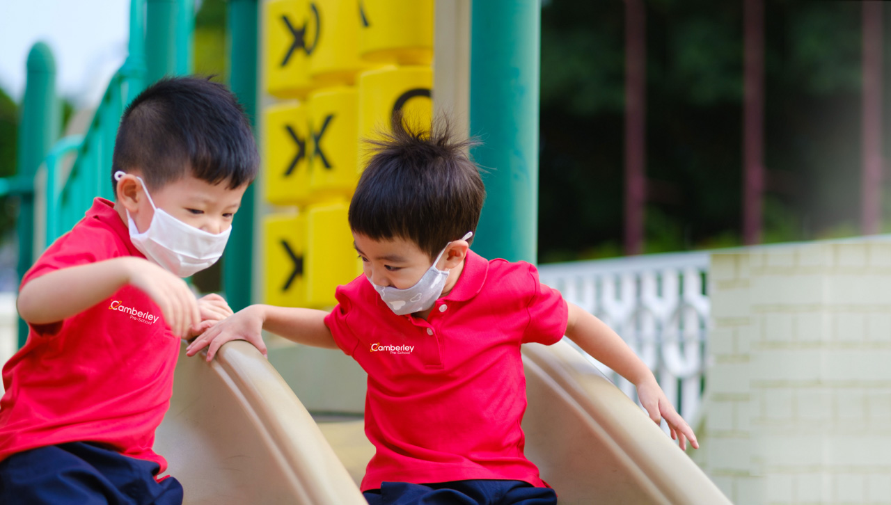
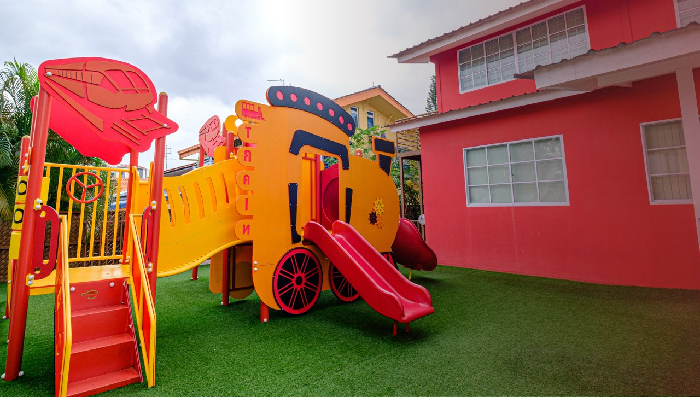

Small teacher-child ratios
Class ratios are kept up to 40% below ECDA's limits — well below from Nursery up — so every child is seen, heard and known.

Inquiry-based learning in genuinely small classes, for children 18 months to 6 years.
Why Camberley
Class ratios are kept up to 40% below ECDA's limits — well below from Nursery up — so every child is seen, heard and known.
Inspired by the Reggio Emilia approach: children ask, explore, hypothesise and discover — not just memorise. Hands-on green projects teach them to care for the world they'll inherit, too.
A bilingual, bicultural English–Mandarin environment all day long, not just during Chinese lessons.
Phonics, speech and drama, cookery, visual arts, creative writing and more, woven into every week.
ECDA sets the maximum children per teacher. We stay at or below it at every level — and well below from Nursery to Kindergarten 2. Every dot below is one child.
Teacher-to-child ratios by level. Lower is better — the Camberley figure shows what we actually keep, not just what's allowed.
Programmes
From first steps to Primary 1 readiness — a programme for every stage.
Multi-sensory exploration — play, discovery and first social experiences, with art as a language for little feelings.
Growing independence — expressing thoughts and emotions through music and movement, speech and drama, and show-and-tell.
Confidence and curiosity — inquiry projects, early phonics and reading, and number sense through games.
Children lead their own projects and experiments — observing, comparing, hypothesising and discovering.
Primary 1 readiness — bilingual communication, literacy, numeracy and science, plus the maturity to thrive in big school.
Testimonials

FAQ
We keep every class at or below ECDA's maximum — for example 1:15 at Kindergarten 2, where ECDA allows 1:25. See the full ratio comparison.
All teachers hold ECCE qualifications (Advanced Certificate to Diploma; many hold degrees in Early Childhood), are first-aid trained, and upgrade continuously through CPD courses and in-house workshops.
7am to 7pm on weekdays.
Three healthy meals daily, certified by the Health Promotion Board.
From 18 months (Playgroup) through to 6 years (Kindergarten 2).
No — most of our families live nearby, and we prefer not to outsource our children's safety to external transport operators.
WhatsApp or call us to book a visit. Come see the school, meet our teachers, and we'll walk you through everything from there.
Our campus

14 Jalan Chelagi, Singapore 509575 · Pasir Ris / Loyang area
Open 7am – 7pm on weekdays. Drop by for a tour, or prefer email? Write to enquiries@camberley-edu.com.